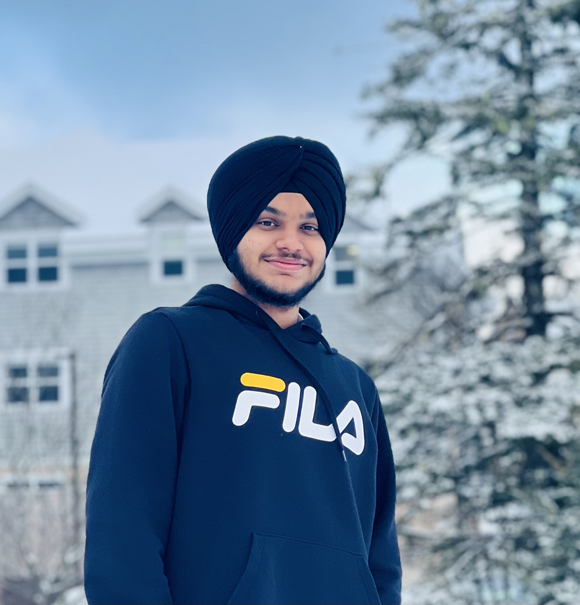
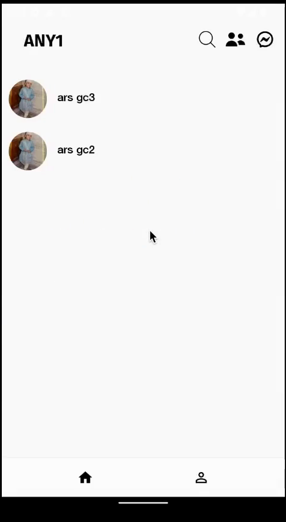
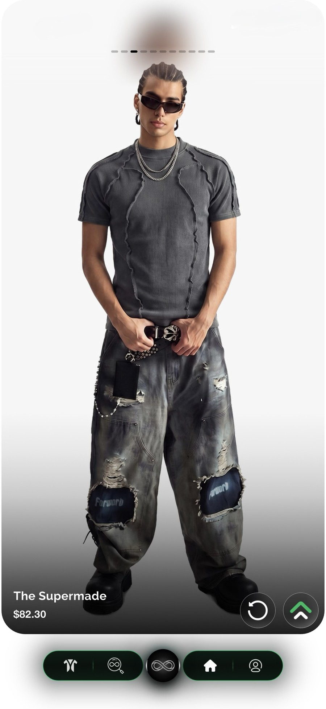
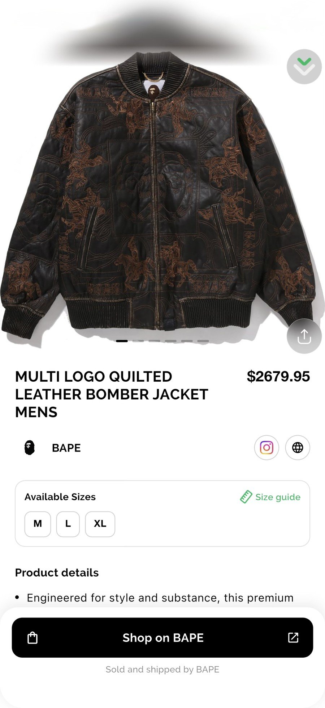
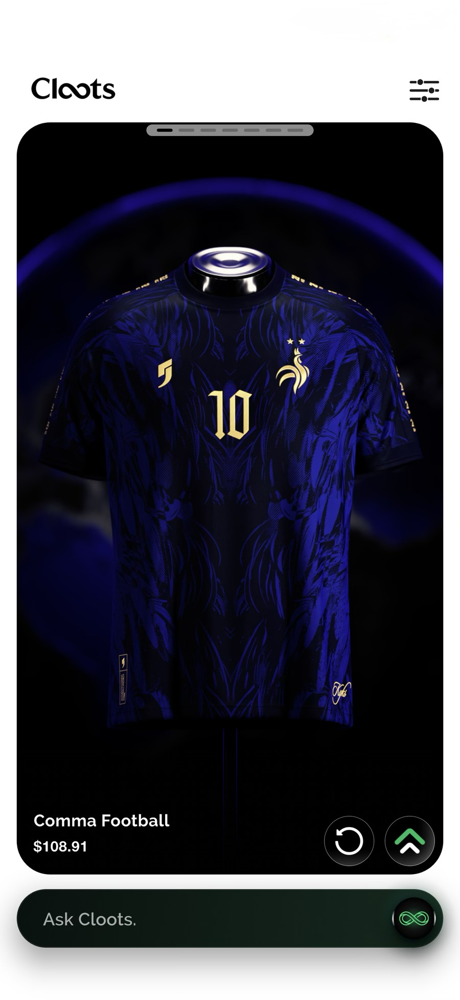
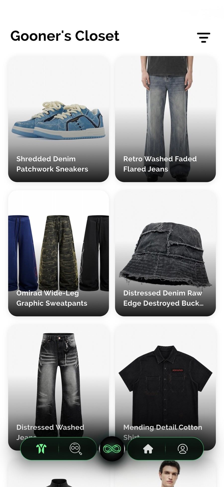
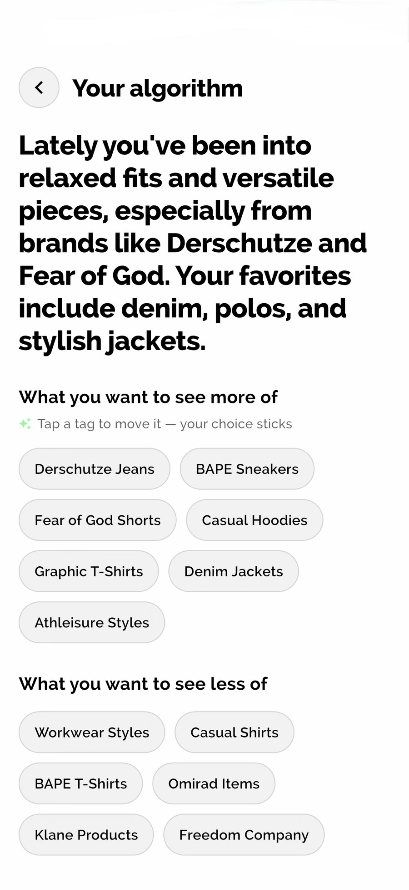
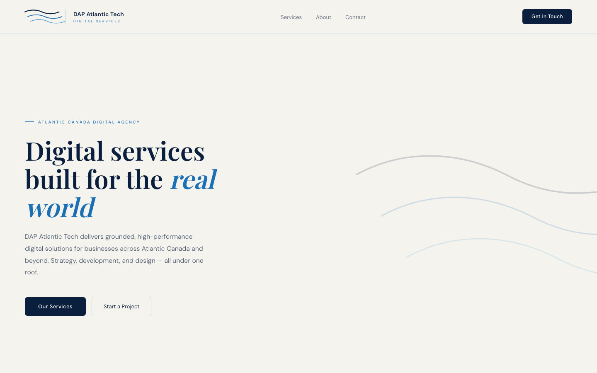

A restaurant that stopped retyping its own menu
Data-driven menu system, plus an accessibility pass the old site never had.
Product Designer & Software Engineer
I design in code, because beauty belongs in function.
I came here for a degree and started shipping before anybody asked me to.

Saint John, September. The winter in that photo was my first one.
I never took Java I or Java II. I wrote both final exams in my first week and got the credit. First student at the Saint John campus to do that for both.
An app for the 11am cafeteria line. The cafeteria became a buffet, so the problem stopped existing. I stopped too.
A booking app that came back an A+, and an agency shipping client work.
Cloots. Designed and developed solo.
Built at night, with the lights off, in a room I barely left.
People meet in group chats, and the door is a comment. gc any1, or gc anyone, left under a stranger’s Instagram reel. Every chat I was in started there. It still works that way.
You could not search for a group. Telegram returned four at a time, mostly channels for downloading things. Reddit gave you somewhere to post, not somewhere to talk. Discord had the servers and no front door. So I built the place that did not exist: search by interest, ask to join, talk. The name came from the comment.
I was nineteen and I had never heard of Dribbble. My mood board was other people’s apps. I downloaded things I liked and copied what worked, and mostly that meant Instagram: the inbox, the profile page, the settings sheet, the menu cards, and the double tap on the avatar that switches accounts. All of it by hand, in Kotlin, before a model would write a line of it for me.
I did not go outside much that stretch. A couple of months, a few trips out, and the rest of it was this. It worked, though. I put it on my friends’ phones and they used it. I was certain it was going to make me a millionaire.
I was certain this was going to make me a millionaire.ME, 2022, ON PRODUCT MARKET FIT

Fashion discovery as a feed: swipe through streetwear from a 1M+ product catalog, and the app learns your taste as you go. Designed and built end to end: product, brand, motion, and the code underneath.
Visit cloots.ca ↗




The recommendation engine learns from swipes in real time: OpenAI embeddings and vector search over the catalog. Semantic search returns ranked results in about 1.5 seconds, and the taste model rebuilds itself from stored history if state is ever lost.
Product photography owns the whole frame. Chrome pulls back to dark glass at the edges, and a single accent is held for the moments that matter. The interface never competes with the clothes.
Motion is the feedback channel. Cards tilt, resist, and leave with momentum. Nothing teleports, so the interface always says what just happened and what it cost.
Get to the feed. Sign in, swipe, and the app starts learning. Density can wait. Clarity cannot.
Empty, failure and offline are designed screens, not leftovers, because the screen with nothing on it is the one most people meet first. Each one says what is happening and points at the next action.
A school project that forgot it was one.
The feedback singled out the fidelity. It was further along than the stage asked for.
That was not talent. I had already shipped apps, so I turned up with the components already built and spent the term on the parts that were actually hard.
Helv books home services: browse the category, pick the job, book it. Designed and implemented the full application, interface through to the Firebase data model underneath.
A booking is a small state machine. Every screen is a view of where that machine currently is, which is why the data model got drawn before the first layout did.
Where the deadline belongs to somebody else.
A registered agency in Atlantic Canada. I sit with the owner, scope it, build it, launch it, and keep it running. No handoff, no account manager in between.

Data-driven menu system, plus an accessibility pass the old site never had.
Marketing site with a live feed, summarised through an LLM API.